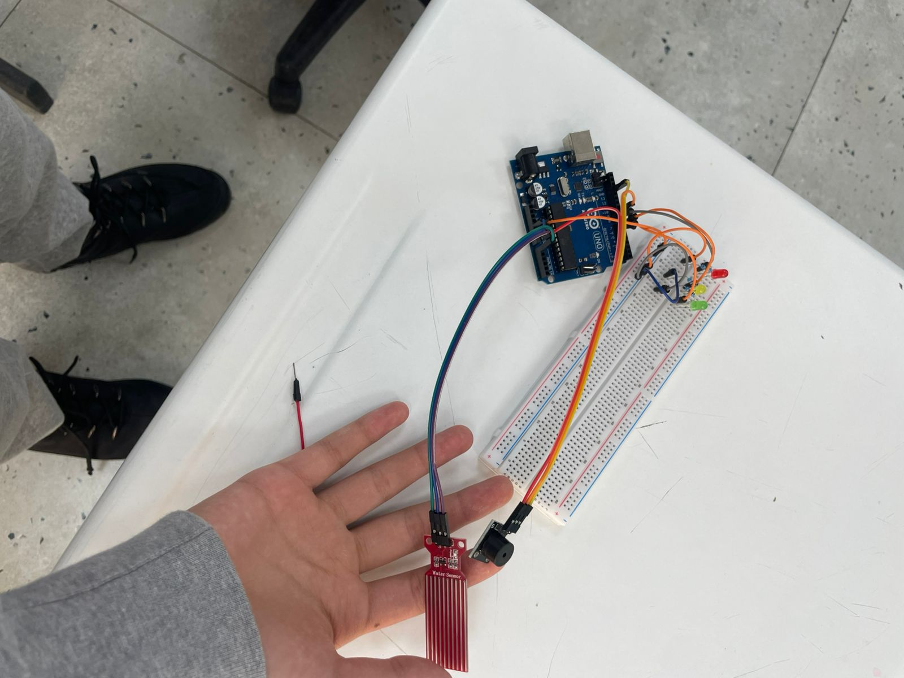
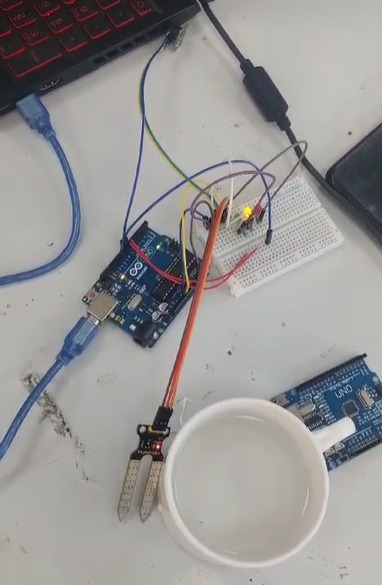

1. Project Description
What is the product
Our product is FloodGuard Alert, an Arduino-based flood detection device. It uses water level sensors to detect when the water in rivers, streets, or bridges rises to a dangerous level. When the system detects possible flooding, it warns people using sound and light signals.
What problem it solves
Flooding is one of the most dangerous natural disasters in the world. Many people lose their lives because floods happen suddenly and people do not receive warnings in time. Our device helps solve this problem by detecting floods early and warning people before the situation becomes dangerous.
Why this problem is important
According to global statistics, floods affect millions of people every year and cause thousands of deaths. Many communities, especially in developing regions, do not have access to advanced flood monitoring systems. Creating a simple and affordable warning device can help protect many lives.
What makes the idea unique
Our idea is unique because:
- It uses Arduino technology, which makes the device affordable.
- It can be installed in many locations such as rivers, bridges, streets, and houses.
- It provides early warning using light and sound signals.
- It is designed to be simple, accessible, and practical for communities.
2. Functional Requirements
The product will be able to:
- Measure water levels using sensors
- Detect when the water level becomes dangerous
- Process data using an Arduino microcontroller
- Activate warning signals (light and sound alarm)
- Work continuously to monitor water levels
- Be installed in flood-prone locations such as rivers or bridges
- Provide early warning before flooding occurs
3. Technical Requirements
Programming
Arduino programming language (C++)
Technologies used:
- Arduino microcontroller
- Water level sensor
- Buzzer (sound alarm)
- LED lights (visual warning)
- Wires and breadboard
- Power supply
Website technologies:
- HTML
- CSS
4. Sketches / Prototype Design
The prototype includes:
- Arduino board connected to water level sensors
- Buzzer for sound alarm
- LED light for visual warning
- Wires connecting the components

5. Sponsor Interview
We: Hello! We are very glad to see you and thanks for investing in us.
Sponsor: Hello! Thank you so much for the warm welcome — it’s a pleasure to be here. I’m glad to support your team and invest in your project.
We: About our project, our project is an Arduino device that prevents deaths from flooding, as flooding has become one of the most dangerous natural disasters. So, its function - it will detect water level, if its level is suitable for flooding, then it will notice people with light and sound.
Sponsor: I’m very interested so far. Why did you choose an Arduino-based solution, and in what places do you plan to install this device (for example, rivers, streets, houses, or bridges)?
We: Well, we are going to install it in bridges, beaches, rivers or in streets and houses if needed.
Sponsor: Oh, good! How is your device different from existing flood warning systems, and why do you think people or governments would choose your solution?
We: Our device is better for 3 reasons, first of all it can install everywhere, secondly it's cheaper which means it is accessible to all people, and finally it detects flooding faster than other existing flood warning systems.
Sponsor: Sounds good! That's enough I am confident that this project has strong potential and real social value. Flooding is a serious and growing problem, and your Arduino-based device offers a practical, affordable, and fast solution to reduce risks and save lives. For these reasons, I am proud to support and invest in your project.
We: Thank you very much, goodbye!
Sponsor: Goodbye!
6. Timeline (Process of Our Work)
Week 1 — Plan + Parts
- Decide what your system will do
- Choose components (Arduino, sensor, buzzer, LED)
Week 2 — Build Basic System
- Connect sensor to Arduino
- Write code to read water level
- Test with water
Week 3 — Add Alerts
- Add buzzer and LED
- Program:
- Safe level
- Warning level
- Danger level 🚨
Week 4 — Improve + Finish
- Fix errors
- Make it look clean (box, wires)
- Test in real life condition
Development Process (Alpha → Beta → Final)
This section shows how our product improved based on feedback and testing.
Alpha Version (Schematic & Proof of Concept)
Status: Initial Prototype
- Basic schematic showing how the water sensor works with Arduino.
- Visual alerts using only LEDs.
- Issues: Some bugs in the code logic (function errors).
Beta Version (Functional Improvements)
Status: Advanced Prototype
- Fixed bugs in the main function code.
- Added a Piezo Buzzer for sound alerts (crucial for sleeping people).
- Improved wiring stability on the breadboard.

Final Version (Design & Real-Life Test)
Status: Ready for Deployment
- Created a protective external box for the device.
- Organized cables for a professional look.
- Field Test: Tested in real-life conditions to ensure durability and sensor accuracy.

Feedback & Evidence
Alpha Stage Feedback
Sponsor Interview Highlights: The sponsor liked the idea but asked how we plan to alert people in different locations. We realized light (LEDs) wasn't enough for loud environments.
Beta Stage Feedback (User Testing)
- User 1: "I might not see the light if I'm not looking at the device." -> Response: Added Piezo element.
- User 2: "The wires look fragile for outdoor use." -> Response: Designed a protective box for the Final version.
Evidence of Development
- Tools used: Arduino IDE, Tinkercad (for schematics), Soldering iron, Multimeter.
- Before vs After: The transition from a messy breadboard (Alpha) to a compact, encased device (Final).
Final Reflection
What improved most? The reliability of the system and the addition of sound alerts made it a real safety tool rather than just a toy.
Most useful feedback: The suggestion to protect the electronics, which led us to build the waterproof box.
Future Improvements: In the future, we would add a GSM module to send SMS alerts to phones.